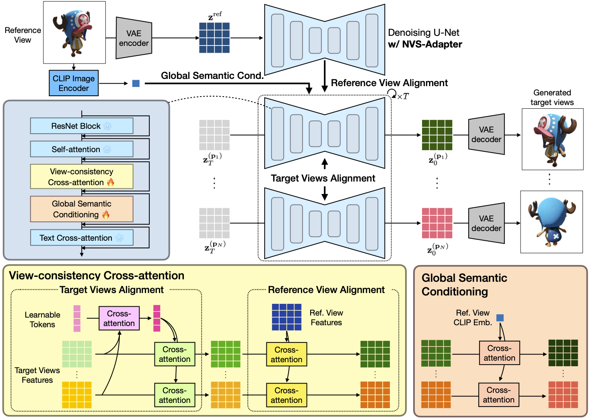

Novel View Synthesis Examples

*Equal Contriubtion
1POSTECH
2Kakaobrain
Our NVS-Adapter is capable of generating novel views from a reference image while preserving the generation capacity of the pretrained T2I model.
Transfer learning of large-scale Text-to-Image (T2I) models has recently shown impressive potential for Novel View Synthesis (NVS) of diverse objects from a single image. While previous methods typically train large models on multi-view datasets for NVS, fine-tuning the whole parameters of T2I models not only demands a high cost but also reduces the generalization capacity of T2I models in generating diverse images in a new domain. In this study, we propose an effective method, dubbed NVS-Adapter, which is a plug-and-play module for a T2I model, to synthesize novel multi-views of visual objects while fully exploiting the generalization capacity of T2I models. NVS-Adapter consists of two main components; view-consistency cross-attention learns the visual correspondences to align the local details of view features, and global semantic conditioning aligns the semantic structure of generated views with the reference view. Experimental results demonstrate that the NVS-Adapter can effectively synthesize geometrically consistent multi-views and also achieve high performance on benchmarks without full fine-tuning of T2I models.

@article{nvsadapter2023,
title={NVS-Adapter: Plug-and-Ply Novel View Synthesis from a Single Image},
author={Yoonwoo Jeong, Jinwoo Lee, Chiheon Kim, Minsu Cho, and Doyup Lee},
journal={},
year={2023}
}